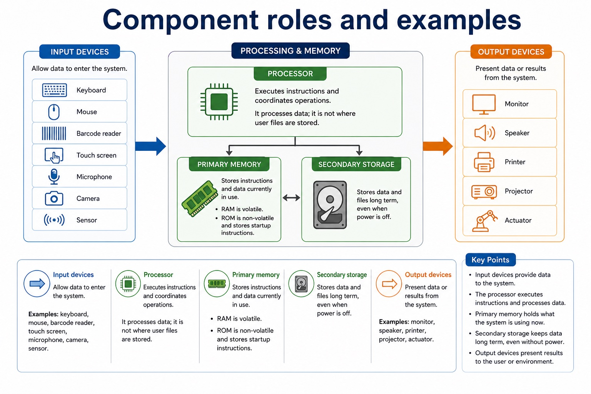
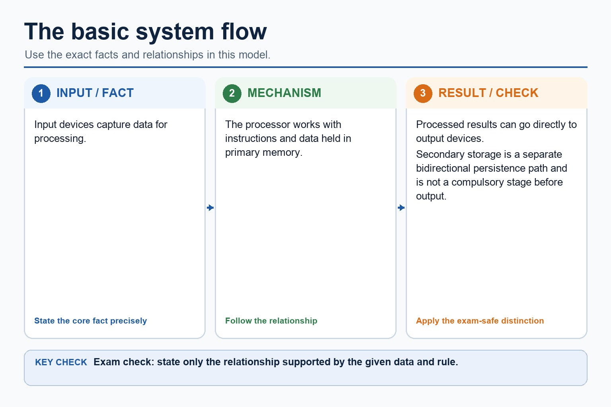
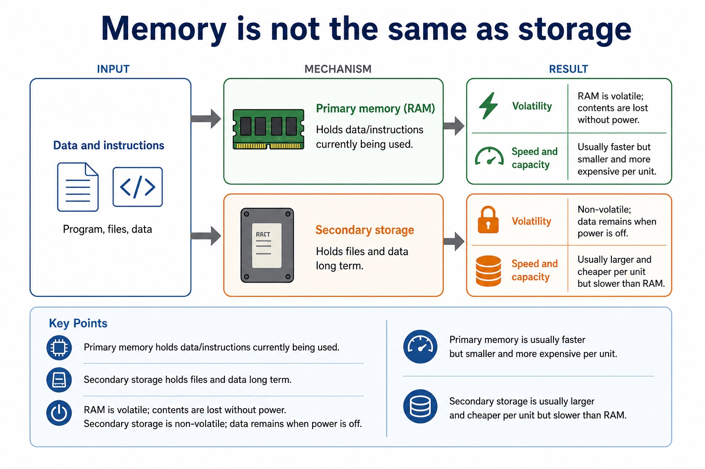

Quick route
Use the diagnostic, learning objectives, first worked example and foundation question. Stop once the learner can explain the central distinction accurately.
Cambridge AS9618 | Paper 1 | Section 3: Hardware
Flexible-depth lesson
S3.01, S3.02 | Visual relationships, mechanisms and worked examples.
Part 1 | optional depth
Recall the main conclusion from Lesson 012: IP addressing, subnetting, URLs and DNS.
Give one accurate definition or method step before continuing. If it is missing, revisit only that prerequisite.
Part 2 | explicit teaching
Complete the default-visible explanation and worked example before using the visual recap.
S3.01 · structure
Input is needed to enter data and instructions into a computer system. Output is needed to communicate processed information to a user or to cause an action. A processor cannot perform a useful task unless it can receive the required data and make the result available.
Primary memory is needed to hold the instructions and data currently being used by the processor. Secondary storage is needed for non-volatile, long-term retention of programs and data. Removable storage is secondary storage that can be disconnected, so it can transfer data or hold an offline backup, although it can be lost or stolen.
An embedded system is a computer system built into a larger device to perform one dedicated task or a closely related set of tasks. A microcontroller may integrate the processor, memory and input/output interfaces needed for that task.
A control system sends output signals to actuators and uses sensor feedback to determine the next control action.
Input devices Allow data to enter the system.
Input is needed to enter data and instructions into a computer system.
Output is needed to communicate processed information to a user or to cause an action.
A processor cannot perform a useful task unless it can receive the required data and make the result available.
Input is needed to enter data and instructions into a computer system.
Output is needed to communicate processed information to a user or to cause an action.
A processor cannot perform a useful task unless it can receive the required data and make the result available.
Field survey tablet: A surveyor enters measurements through a touchscreen, sees validation messages on the display, uses RAM as primary memory while the survey application runs, saves records on internal secondary storage, and copies an encrypted backup to removable storage before leaving the site.
Explain the following targets in one connected answer, using a concrete example for each: input; output; primary memory; secondary storage; removable storage.
Use these cards and diagrams to reinforce the explanation above; they are not a substitute for it.
Input is needed to enter data and instructions into a computer system.
Output is needed to communicate processed information to a user or to cause an action.
A processor cannot perform a useful task unless it can receive the required data and make the result available.
Diagram · 1 of 3

Diagram · 2 of 3

Diagram · 3 of 3

Explain the need for input, output, primary storage, secondary storage and removable storage.
Show understanding of the need for input, output, primary memory and secondary storage, including removable storage.
S3.02 · comparison
An embedded system is a computer system built into a larger device to perform one dedicated task or a closely related set of tasks. A microcontroller may integrate the processor, memory and input/output interfaces needed for that task.
Benefits can include low cost, low power use, small size and reliable, predictable automatic operation because the hardware and software are designed for a limited purpose. Drawbacks can include limited processing, storage and user interface, difficulty adding new functions, and dependence on the embedded controller: if it fails, the larger device may stop working. A valid comparison must link each point to the device and task.
An embedded system is designed to perform a specific task or closely related set of tasks. It forms part of a larger product, such as a washing machine, microwave oven or router.
Embedded systems, including their benefits and drawbacks.
An embedded system is a computer system built into a larger device to perform one dedicated task or a closely related set of tasks.
A microcontroller may integrate the processor, memory and input/output interfaces needed for that task.
Benefits can include low cost, low power use, small size and reliable, predictable automatic operation because the hardware and software are designed for a limited purpose.
An embedded system is a computer system built into a larger device to perform one dedicated task or a closely related set of tasks.
A microcontroller may integrate the processor, memory and input/output interfaces needed for that task.
Benefits can include low cost, low power use, small size and reliable, predictable automatic operation because the hardware and software are designed for a limited purpose.
Field survey tablet: A surveyor enters measurements through a touchscreen, sees validation messages on the display, uses RAM as primary memory while the survey application runs, saves records on internal secondary storage, and copies an encrypted backup to removable storage before leaving the site.
Explain the following targets in one connected answer, using a concrete example for each: embedded system; dedicated; benefit; drawback.
Use these cards and diagrams to reinforce the explanation above; they are not a substitute for it.
An embedded system is a computer system built into a larger device to perform one dedicated task or a closely related set of tasks.
A microcontroller may integrate the processor, memory and input/output interfaces needed for that task.
Benefits can include low cost, low power use, small size and reliable, predictable automatic operation because the hardware and software are designed for a limited purpose.
Diagram · 1 of 1

Understand embedded systems and their benefits/drawbacks.
Show understanding of embedded systems, including their benefits and drawbacks.
Part 3 | select by learner need
Question 1. A portable medical system receives patient measurements, processes them and stores the records. Explain why it needs input, output, primary memory, secondary storage and removable storage.
Answer: input receives patient measurements/data; output communicates results or warnings; primary memory holds current program instructions and working data; secondary storage retains patient records long term without power; removable storage supports transfer or an offline/detachable backup
Marking guidance: Do not treat primary memory, secondary storage and removable storage as interchangeable terms.
Common error: For the command word explain, perform that exact action; do not replace it with an unrelated fact.
Question 2. What two features define an embedded system?
Answer: It is built into a larger device and performs a dedicated task or closely related set of tasks.
Marking guidance: Award one mark for each distinct, technically accurate point or method step.
Common error: Do not repeat the same point in different words; each mark needs a separate idea or method step.
Question 3. Give one drawback of an embedded controller and explain its consequence.
Answer: For example, limited resources make it difficult to add unrelated functions or run general-purpose software.
Marking guidance: Award one mark for each distinct, technically accurate point or method step.
Common error: Do not copy the worked example unchanged; transfer the method and check it against the new context.
| Reference | Marks | Command word | Question type |
|---|---|---|---|
| 9618/12/W/24 Q2(a) | 3 | describe | explain |
| 9618/11/S/24 Q2(a) | 2 | identify | recall |
| 9618/11/S/24 Q2(i) | 2 | identify | recall |
| 9618/11/S/24 Q2(ii) | 2 | give | recall |
Index only: Cambridge question and mark-scheme wording is not reproduced on this public course page.
Part 4 | close when ready
Students often list hardware without explaining suitability. Correction: the mark usually comes from matching a feature to a need.